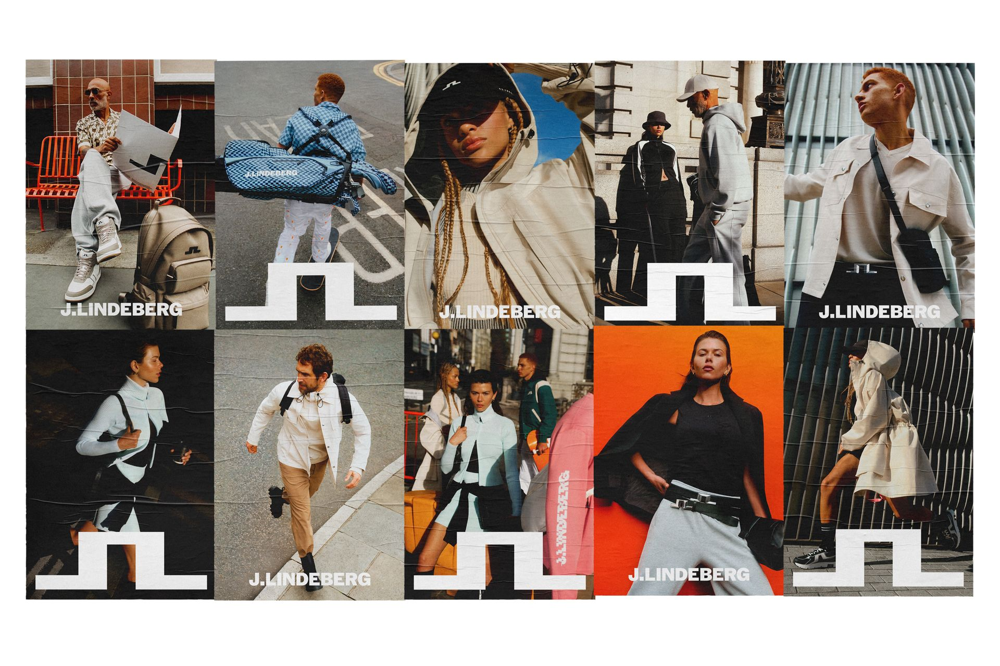

SS26 Brand Campaign – J.LINDEBERG
Site inprogress
J.LINDEBERG’s SS26 brand campaign, launching women’s ready-to-wear alongside the brand’s new lifestyle direction.
I created the concept and led the art direction from initial idea and on-set direction through to final delivery and roll-out, and directed the campaign films.
- Client
- J.LINDEBERG
- Year
- 2026
- Role
- Concept, art direction & film direction
- Photographer
- Rasmus Weng Karlsen
- DOP
- Oliver Bampfyllde
- Stylist
- Melanie Buchave
- Production
- DAY International
